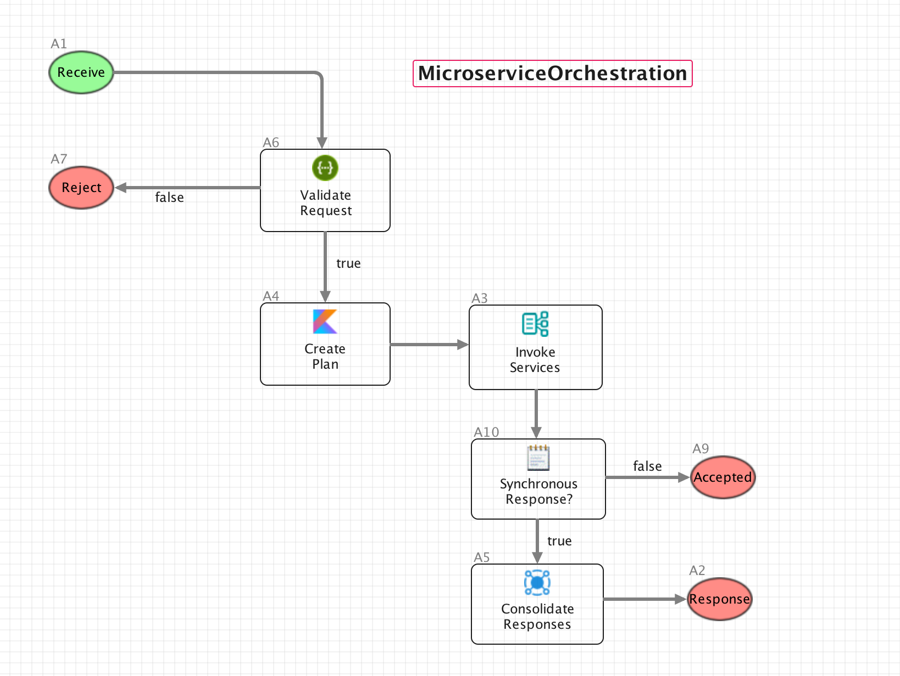
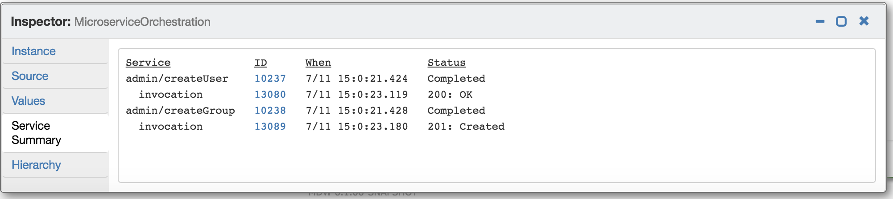

The Microservice Orchestrator activity is at the heart of MDW's service orchestration capabilities. It uses a declarative Service Plan to give you a flexible and expressive way to control which services are called invoked and exactly how they are invoked. MDWHub provides a drillable, end-to-end runtime view enabling users to track all services and their dependencies.
The best way to understand how to create a Service Plan to drive your Microservice Orchestrator activity is to look at a working example. The MDW automated tests include a straightforward example in the Microservice Orchestration process:
Implementation for the Invoke Services activity starts upstream in the Create Plan Kotlin Script activity. Here's the source code that populates the servicePlan variable according to runtime conditions:
variables["servicePlan"] = servicePlan(runtimeContext) {
services {
microservice {
name = "admin/createUser"
method = "POST"
url = "${runtimeContext.props["mdw.services.url"]}/services/Users"
bindings {
"requestMapper" to "com.centurylink.mdw.tests.microservice/UserRequestMapper.groovy"
"responseMapper" to "com.centurylink.mdw.microservice/StatusResponseMapper.groovy"
}
}
microservice {
name = "admin/createGroup"
method = "POST"
url = "${runtimeContext.props["mdw.services.url"]}/services/Workgroups"
enabled = (variables["request"] as Jsonable).getJson().has("group")
bindings {
"requestMapper" to "com.centurylink.mdw.tests.microservice/GroupRequestMapper.groovy"
"responseMapper" to "com.centurylink.mdw.microservice/StatusResponseMapper.groovy"
}
}
}
}
The left side of the assignment on the first line is what sets the variable value. The special servicePlan() constructor
uses a super friendly Kotlin DSL to specify which services are executed and with what values. Each microservice represents a designated endpoint
that's to be run zero or more times based on its setup. For example, the first microservice declaration says to POST to the createUser service
with a property-driven URL from mdw.yaml. It also spells out any
input variable bindings to be passed to the invocation subflow. Dynamic values for each microservice can
be assigned using variables["myvar"] syntax, or Kotlin
String Template expressions. At runtime, all these values
are substituted into the servicePlan YAML process variable.
There are many more options available for configuring each microservice than those depicted in this example. The best documentation for these options is the ServicePlanModel.kt source code that contains all of the default values.
data class Microservice(
private val runtimeContext: ActivityRuntimeContext = MockRuntimeContext("dummy"),
var name: String = "",
var url: String = "",
var method: String = "",
var subflow: String = "com.centurylink.mdw.microservice/\${StandardInvoke}.proc",
var enabled: Boolean? = true,
var count: Int = 1,
var bindings: MutableMap = mutableMapOf(
"microservice" to name,
"serviceUrl" to url,
"serviceMethod" to method,
"request" to runtimeContext.docRefs["request"],
"requestHeaders" to runtimeContext.docRefs["requestHeaders"],
"serviceSummary" to runtimeContext.docRefs["serviceSummary"],
"requestMapper" to "com.centurylink.mdw.microservice/IdentityRequestMapper.groovy",
"responseMapper" to "com.centurylink.mdw.microservice/IdentityResponseMapper.groovy"
)
For example, notice in this source code that by default enabled is true and count
is one. Either of these can be overridden by dynamic or conditional values based on process runtime state.
By far the most important microservice setting is its subflow property. An essential aspect of microservice orchestration is that each
invocation spawns an individual subprocess suited to its specific endpoint. Notice that the default value points to a prebuilt .proc asset from the
com.centurylink.mdw.microservice package. In fact, the $ prefix tells us that this is a Template Process.
The ${StandardInvoke} process provides a sequence that should prove useful in many circumstances. If ${StandardInvoke} does not meet your needs, you should
point to your own subflows, which may or may not be template processes.
Any number of bindings may be used to pass values to a subflow. In ${StandardInvoke}, requestMapper and responseMapper variables are needed
to transform the main flow's request to the serviceRequest variable used by each subflow adapter. This transformation is accomplished
in a Crossmap activity. By default the identity request/response mappers are passed, indicating no translation required.
Template processes are effectively no different from regular processes, except that their runtime instances are labeled according to their microservice
name. So in the example above all instances are defined by ${StandardInvoke}, but in MDWHub they appear as admin/createUser or admin/createGroup.
Technically that's the only difference between a template process and any other process. However, by convention template processes have dynamic placeholders
in many places that ordinarily would be hard-wired. For example, in ${StandardInvoke} the REST adapter activity defines its HTTP method as ${serviceMethod}
instead of selecting GET, POST, PUT, PATCH or DELETE from the dropdown. Upstream, serviceMethod is bound to the servicePlan's "method" parameter.
A big part of Microservice Orchestrator's value proposition is centered around the end-to-end Service Summary. This gives you a lot of free goodies as long as your flow abides by the convention of declaring a Jsonable serviceSummary input variable in each subflow along the way.
For a working example, clone and run the mdw-demo project which contains the microservice test flows. Once you have mdw-demo running, submit a request like this one from the microservice test package: https://github.com/CenturyLinkCloud/mdw-demo/blob/master/assets/com/centurylink/mdw/tests/microservice/mainRequest.json Then, on the MDWHub Workflow tab, change the filter to include [Any] status and drill into the latest MicroserviceOrchestration instance. You can look at the serviceSummary variable JSON for all the gory details, but the new Service Summary tab provides friendlier access.
Here you can view the status of all invocations at a glance, or click to drill in to any specific instance.
TODO: describe invocations and updates
(TODO)